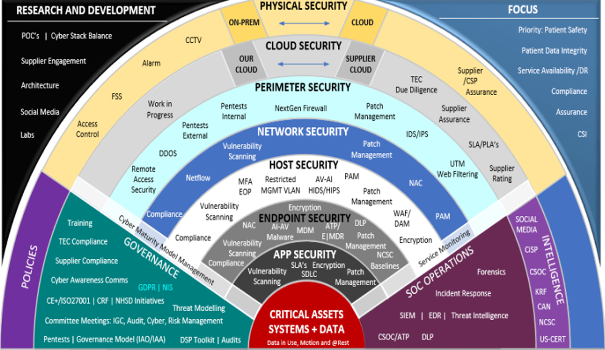
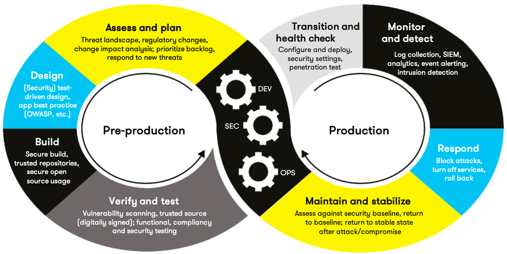

School · Secure Coding
CS-405: Secure Coding
A course in writing software that defends itself — establishing secure coding standards, drafting a security policy for a client scenario, and hardening C++ code against common vulnerabilities.
This project centered on secure software development: identifying where code is vulnerable, writing standards to prevent those weaknesses, and communicating the reasoning to a non-technical audience. The work spanned a written security policy, a hardened encryption module, and a presentation making the case for adopting secure coding practices.
What I worked on
- Authored a security policy and set of secure coding standards for a client scenario.
- Built and reviewed an encryption module, applying defensive programming techniques.
- Addressed common vulnerability classes — input validation, numeric overflow, buffer handling, and exception safety.
- Ran Cppcheck static analysis across the C++ source to catch bugs, undefined behaviour, and memory issues before submission.
- Delivered a presentation with a supporting script arguing for secure coding adoption.
- Reflected on the process in course journals.
Reflection
Add a short reflection here on what this course taught you about writing secure, resilient code and how it shapes the way you approach development now.
Diagrams
Security model & process
Reference diagrams for the security model and the secure development lifecycle behind this work.

Cyber Maturity Model — Defense in Depth
A layered ("defense in depth") view of the security model. It moves from the outer physical and cloud layers inward through perimeter, network, host, endpoint, and application security to the critical assets and data at the centre. Surrounding pillars — governance, policies, SOC operations, threat intelligence, and R&D — show the supporting functions that keep each layer effective.
research_dev.png
DevSecOps Lifecycle Loop
The secure development lifecycle drawn as a continuous loop: pre-production (assess and plan, design, build, verify and test) on one side, and production (transition and health check, monitor and detect, respond, maintain and stabilise) on the other. Security (SEC) runs alongside development (DEV) and operations (OPS) at every stage, rather than being added at the end.
auto_sum.pngArtifacts
Files & deliverables
The documents and code from this project, hosted in the repository.